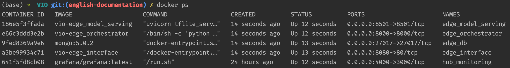
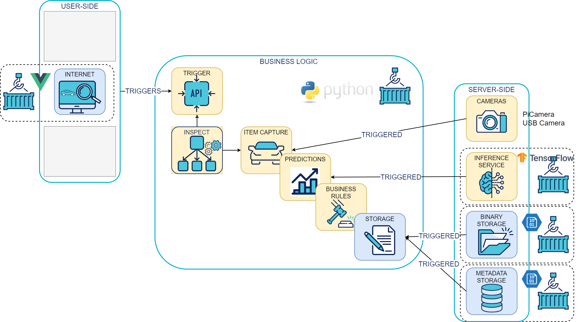
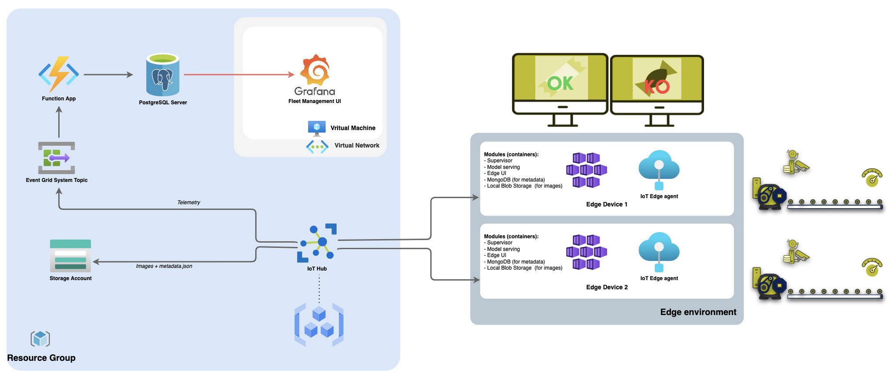

Getting Started
Visual Inspection Orchestrator is a modular open source framework made to ease the deployment of VI usecases, initiated by Octo Technology.
Usecase example: Quality check of a product manufactured on an assembly line.
The VIO modules are split between:
** vio-edge modules **: The VIO edge modules are deployed close to the object to inspect
** vio-hub modules **: The VIO hub modules are deployed in the cloud to collect data and orchestrate the edge fleet
Install the framework
To launch the complete stack, you'll need a minima docker install on your machine.
git clone git@github.com:octo-technology/VIO.git
Note: The VIO docker images are available here
Run the stack
To launch the stack you can use the Makefile on the root of the repository which define the different target based on the docker-compose.yml:
- run all edge services (orchestrator, model-serving, interface, db) with local hub monitoring (grafana):
make vio-edge-up - stop and delete all running services:
make vio-edge-down
In case you want to run a specific module, each module has its own make command:
- run the edge_orchestrator containerized:
make edge_orchestrator - run the edge model serving containerized:
make edge_model_serving - run the edge interface containerized:
make edge_interface
Indeed each of the above target correspond to a command docker-compose.yml. For example, the target edge_orchestrator correspond to :
$ docker-compose up -d --build edge_orchestrator
To check all services are up and running you can run the command docker ps, you should see something like below:

Once all services are up and running you can access:
- the swagger of the edge orchestrator API (OrchestratoAPI): http://localhost:8000/docs
- the swagger of the edge model serving: http://localhost:8501/docs
- the hub monitoring: http://localhost:4000/login
- the edge interface: http://localhost:8080
From the edge interface you can load a configuration and run the trigger button that will trigger the Orchestrator API and launch the following actions:

Implementation example
Here you can find an implementation of VIO deployed on Azure (vio-hub) managing a fleet of Raspberrys (vio-edge):
